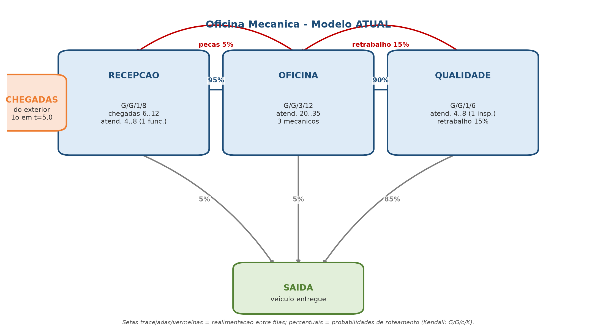
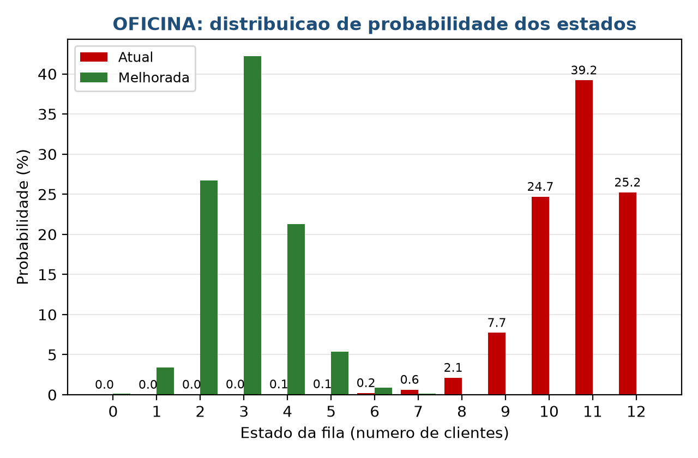
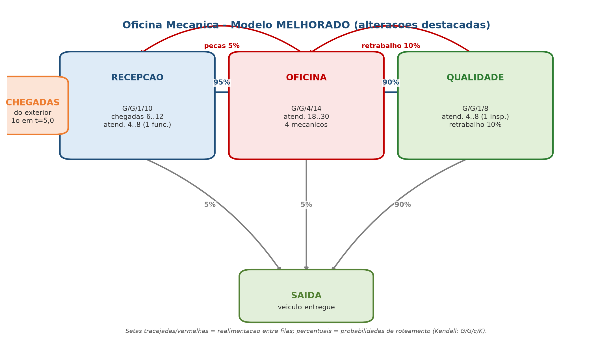
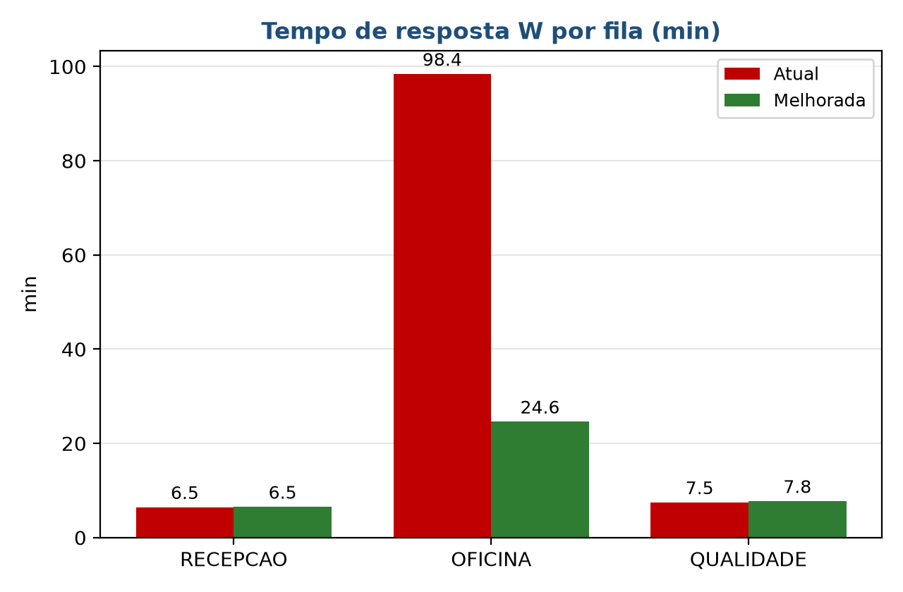
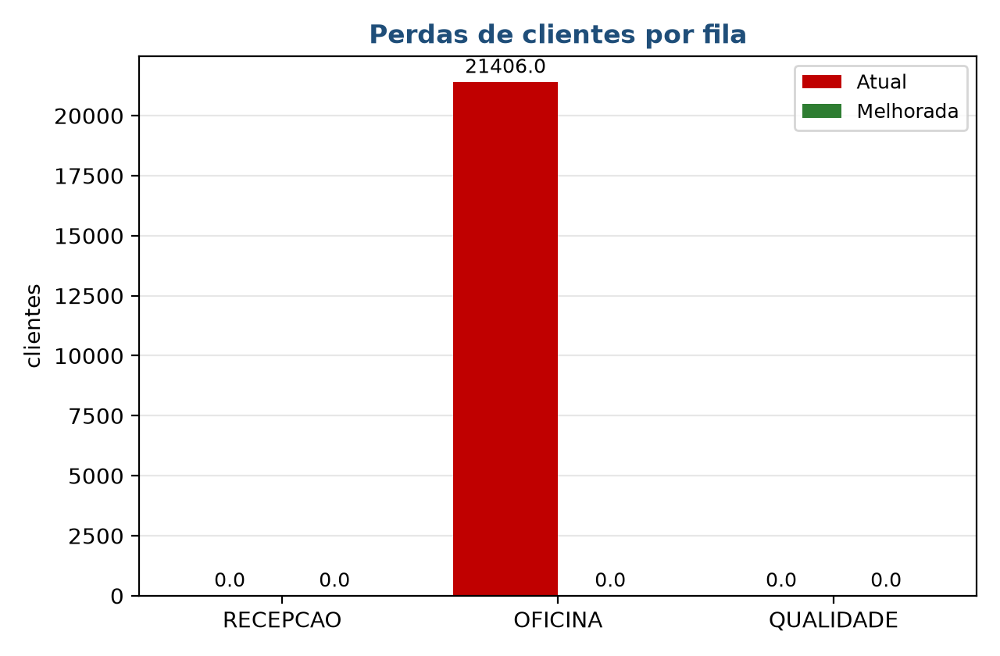

T2 | Avaliacao de Aprendizagem
Oficina Mecanica: analise e melhoria de uma rede de filas com realimentacao
Disciplina: Simulacao e Metodos Analiticos
Unidade de Aprendizagem: UA2 | Fundamentos de Simulacao por Computador
Modulo: M9 | Avaliacao de um Modelo Simulado
Grupo: T2 - 690 - 16
Integrantes: Integrante 1, Integrante 2, Integrante 3, Integrante 4, Integrante 5, Integrante 6
Porto Alegre, outubro de 2026
Uma oficina mecanica recebe veiculos para reparo. O cliente chega, abre uma ordem de servico na RECEPCAO (orcamento e cadastro) e o carro segue para a OFICINA, onde e reparado. Ao terminar, passa pelo CONTROLE DE QUALIDADE (teste do servico).

| Fila | Notacao | Chegadas ext. | Atendimento | Servidores | Capacidade |
|---|---|---|---|---|---|
| RECEPCAO | G/G/1/8 | U(6;12), 1a em 5,0 | U(4;8) | 1 | 8 |
| OFICINA | G/G/3/12 | -- | U(20;35) | 3 | 12 |
| QUALIDADE | G/G/1/6 | -- | U(4;8) | 1 | 6 |
A soma das probabilidades de cada fila e 1,0 (incluindo a saida da rede).
| Fila | Perdas | N (populacao) | D (vazao/min) | U (utilizacao) | W (min) |
|---|---|---|---|---|---|
| RECEPCAO | 0 | 0,75 | 0,1164 | 69,87% | 6,46 |
| OFICINA | 21406 | 10,74 | 0,1091 | 99,98% | 98,44 |
| QUALIDADE | 0 | 0,73 | 0,0983 | 58,95% | 7,48 |

Conclusao: e preciso aumentar a capacidade da OFICINA e/ou reduzir a carga que chega ate ela.

| Fila | Metrica | Atual | Melhorada | Variacao |
|---|---|---|---|---|
| OFICINA | Perdas | 21406 | 0 | zerou |
| OFICINA | N (populacao) | 10,74 | 3,01 | -7,72 |
| OFICINA | D (vazao/min) | 0,1091 | 0,1224 | +12,2% |
| OFICINA | U (utilizacao) | 99,98% | 73,46% | -26,5 p.p. |
| OFICINA | W (min) | 98,44 | 24,61 | -75,0% |


pip install pyyaml python3 simulador.py modelos/oficina.yml python3 simulador.py modelos/oficina_melhorada.yml
Formulas: MU = 1/E[S]; N = soma k.P(k); D = MU.Ns; U = Ns/servidores; W = N/D.